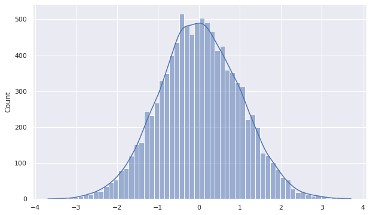
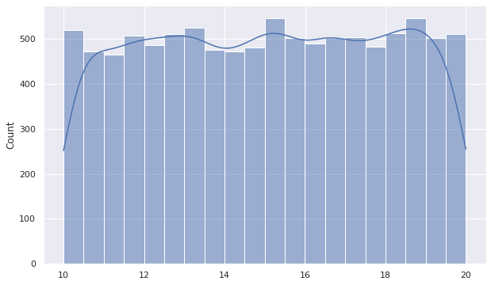
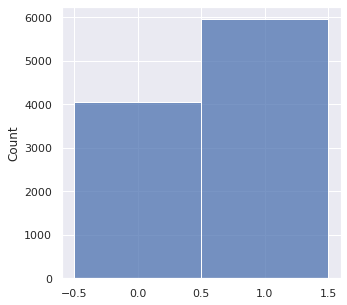
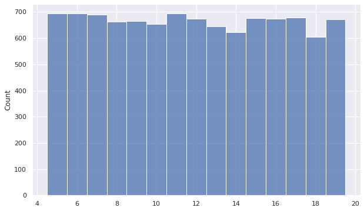

Distributions
Table of Contents
1 Normal Continuous
\[X\sim N(\mu, \sigma^2)\]
or
\[X\sim Gaussian(\mu, \sigma)\]
Standard Normal Distribution
- \(\mu=0\)
- \(\sigma=1\)
Sample
from scipy.stats import norm mean = 0 std = 1 data = norm.rvs(size=10000, loc=mean, scale=std) sns.histplot(data=data, kde=True)

\[P(X=x|\sigma, \mu)=\frac{1}{\sigma\sqrt{2\pi}}\cdot e^{-\frac{(x-\mu)^2}{2\sigma^2}}\]
CDF
\[P(X\le x|\sigma, \mu) = \frac{1}{\sigma\sqrt{2\pi}}\int_{-\infty}^{x}e^{-\frac{(x-\mu)^2}{2\sigma^2}}dx\]
2 Uniform(Continuous)
A continuous random variable has a uniform distribution if all the values belonging to its support have the same probability density. \[X\sim Uniform(a, b)\]
Sample
from scipy.stats import uniform a = 10 b = 20 width = b - a data = uniform.rvs(loc=a, scale=width, size=10000) sns.histplot(data=data, bins=20, kde=True)

\[P(X=x|a, b)=\begin{cases} \frac{1}{b-a}, & a \le x \le b\\ 0, & \mbox{otherwise}\\ \end{cases}\]
CDF
\[P(X\le x|a, b)=\begin{cases} 0, & \mbox{if } x < a\\ \frac{x-a}{b-a}, & \mbox{if } a\le x \le b\\ 1, & \mbox{if } x > b \end{cases}\]
Expected Value
\[E[X]=\frac{a+b}{2}\]
Variance
\[Var[X]=\frac{(b-a)^2}{12}\]
3 Bernoulli Discrete
Let \(X\) be a discrete random variable. Let its support be \(R_X = \{0, 1\}\), the probability of \(X=1\) is \(p\) \[X\sim Bernoulli(p)\]
Sample
from scipy.stats import bernoulli data = bernoulli.rvs(p=0.6, size=10000) sns.histplot(data=data, discrete=True, kde=False)

PMF
\[P(X=x) = \begin{cases} p, & \mbox{if }x = 1 \\ 1-p, & \mbox{if }x = 0 \\ 0, & \mbox{if }x\notin R_X \\ \end{cases}\]
- for \(k\in\{0, 1\}\)
\[P(X=x)=p^k(1-p)^{1-k}\]
CDF
\[P(X\le x)= \begin{cases} 0, & \mbox{if }x < 0\\ 1-p, & \mbox{if }0 \le x < 1 \\ 1, & \mbox{if }x\ge 1 \\ \end{cases}\]
Expected Value
\[E[X]=p\]
Variance
\[Var[X]=p(1-p)\]
4 Uniform(Discrete) Discrete
\[X\sim Uniform(a, b, k)\] A discrete random variable has a uniform distribution if all the values belonging to its support have the same probability density. Let \(X\) be a discrete random variable. Let its support be \(R_X=\{a, a+k, a+2k \dots b\}\). Let the number of \(R_X\) be \(N\), then \(N=\frac{b-a}{k}+1=\frac{b-a+k}{k}\)
Sample
from scipy.stats import randint # a = 5, b = 20, k = 1 data = randint.rvs(low=5, high=20, size=10000) sns.histplot(data=data, discrete=True)

PMF
\[P(X=x|a, b, k)=\frac{1}{N}=\frac{k}{b-a+k}\]
CDF
\[P(X\le x|a, b, k)= \begin{cases} 0, & \mbox{if }x < a\\ \frac{\lfloor x\rfloor -a+k}{b-a+k}, & \mbox{if }a \le x \le b \\ 1, & \mbox{if }x > b \\ \end{cases}\]
Expected Value
\[E[X]=\frac{a+b}{2}\]
Variance
\[Var[X]=k^2(\frac{N^2-1}{12})=\frac{(b-a)(b-a+2)}{12}\]
5 Relationship between PDF & CDF
\[\frac{dy}{dx}CDF(x)=\int PDF(x)dx\]
6 Terms
- PMF
- Probability mass function
- Probability density function
- CDF
- Cumulative distribution function